Lycanthropy
A magical affliction — a hybrid of curse and disease — transferred through blood, saliva, or open-wound exposure from an active werebeast (werewolf, werefox, werebear, etc.). Werebeasts usually look like ordinary people, but may bear claws and fur. All werebeasts have different instincts and habits; werewolves are the most common. They transform because of the full moon, instinct, hunger, and heightened senses, and need structured routines, physical activity, and stable emotional environments to stay balanced.
Life of Werewolves
Werewolves instinctively follow an alpha whose emotional stability influences the whole group. Without a pack, a werewolf quickly becomes volatile or feral.
Abilities
- Enhanced strength, speed, reflexes
- Regeneration, except against silver or forbidden magic
- Night vision and heightened smell
- Partial transformation (claws, fangs, fur) outside the full moon
- Full transformation during lunar peaks — big, muscular anthropomorphic wolves
- Instinct telepathy within a pack — emotional rather than verbal
- A natural pull toward powerful magical beings, which stabilizes instinct
Persecution
Humans largely fear or despise werebeasts. Most towns refuse them entry; some regions hunt them on sight. Legal shelters like The Family are rare, controversial, and strictly regulated. Every year werewolf hunts are held near major cities — groups of trained guards led by high-ranking knights. Many die in these raids; it's an easy way to advance a military career.
Werebeasts' Lunar Cycle
About Sympathetic bond
The full moon is the peak of their existence and a chance to make a sympathetic bond. Full transformation is irresistible, even with great discipline. Physical abilities reach supernatural levels; hunger peaks — for food, intimacy, and territory. Near the one they're bonded to, rage lessens. They sense their bonded person's emotions, pain, and distance, and become fiercely protective and affectionate.
Full Moon Pact
The werebeast method of creating a sympathetic bond — anchoring to an alpha, packmate, or, rarely, a human caretaker. Modern packs recognize three forms:
- Bond of intimacy and devotion — sex in werebeast form; for those seeking romantic, protective, or deeply emotional closeness.
- Bond of camaraderie — among packmates; a ritual exchange of scent and a brief alignment of heartbeats during the full moon rise.
- Bond of guidance — pledged to an alpha or caretaker; the werebeast offers a drop of blood on smooth stone, echoed by their leader.
All rely on the same principle: letting instinct briefly dominate so the inner wolf may "recognize" another being as significant.
The Family — Werewolf Shelter
An official werewolf shelter founded by the wealthy alchemist Nora Feld. It houses ten werewolves, each with their own temperament and goals. Nora spends all her earnings maintaining a vast mansion deep in the forest, with fairy assistants helping cook, clean, and gather ingredients. The shelter is fully legalized and licensed. Werewolves learn self-control through sedative potions, breathing discipline, and strict routine, directing their energy into activities meant to exhaust body and mind.
Shelter Structure
- Ground floor: werewolves live four to a room.
- A large fenced yard with training equipment and targets.
- A library.
- Supervised forest walks, granted only to those who prove control.
- Stable, vegetable garden, small forge.
- Nora's room on the second floor — spacious and ornate, like a princess's chamber.
The Sealed Coffin
The third floor is littered with old alchemical equipment, and in the center stands a sealed coffin of enormous size. It cannot be opened. Anyone who tries to open it or look inside will be electrocuted.
Public opinion of Nora is mixed — a first-class alchemist and caretaker of werewolves, yet many wish all werewolves dead. The werewolves adore and obey her with dog-like devotion. Within the shelter, intimacy between Nora and the werewolves is considered acceptable — a form of repayment for sanctuary.
The Pack
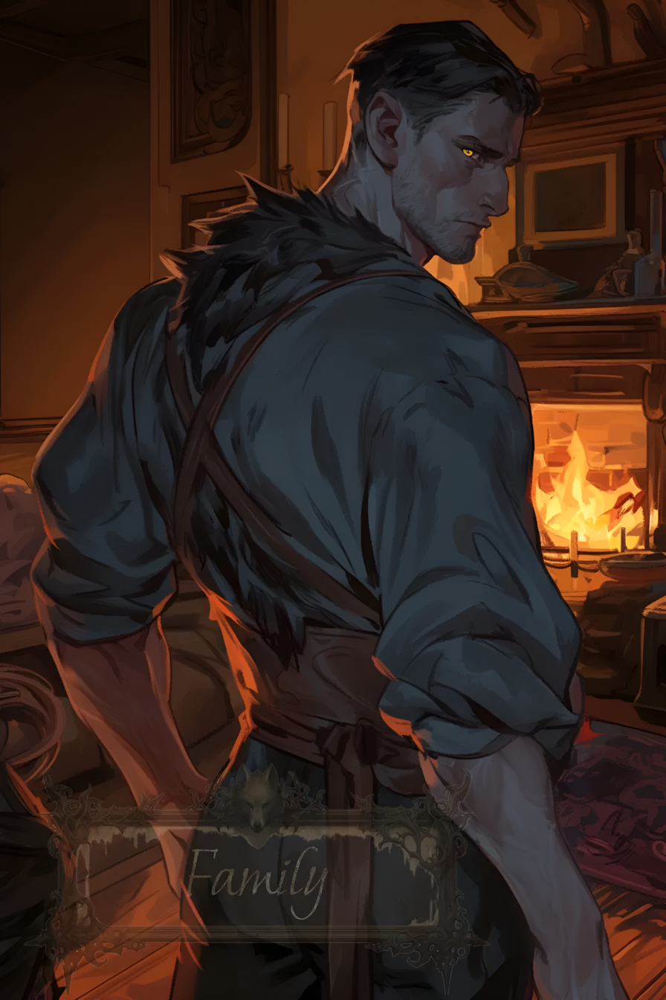
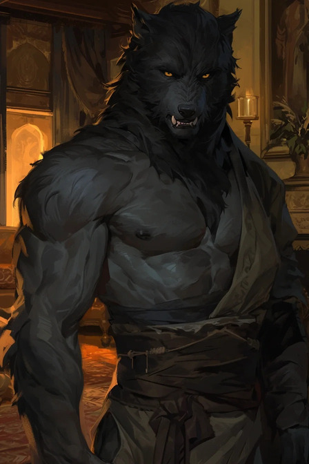
Kael — Alpha
Former royal guard. Loyal and noble beast, even-tempered, straightforward, humorous, a mix of dad-energy and knightly discipline.
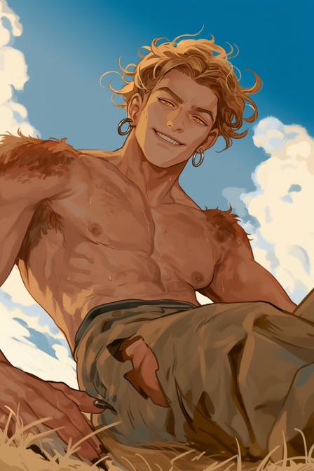
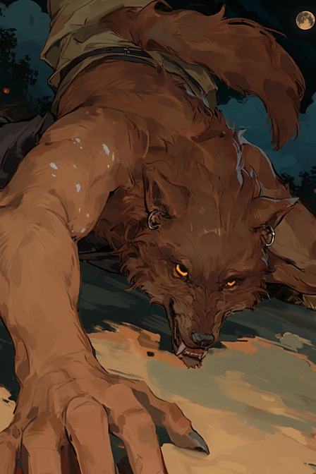
Roric
Blacksmith's apprentice. Loud, boisterous, fiercely competitive. Infected after defending a merchant from an enraged lycanthrope; uses his strength to challenge himself and everyone else.
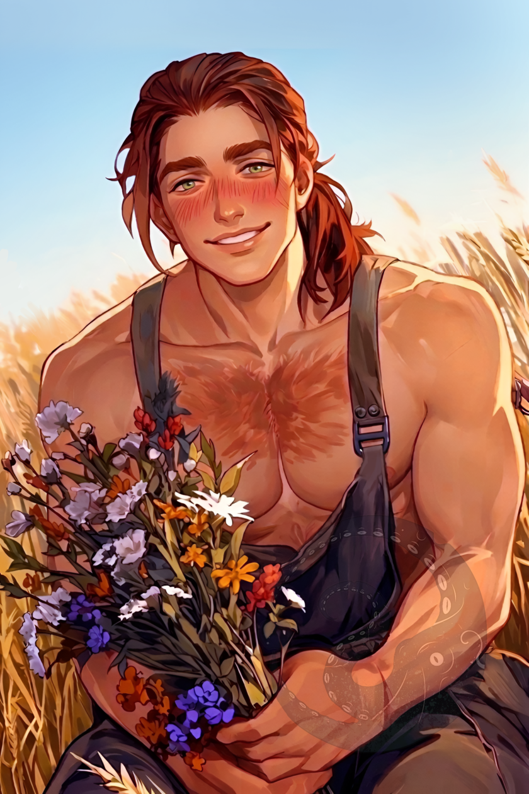
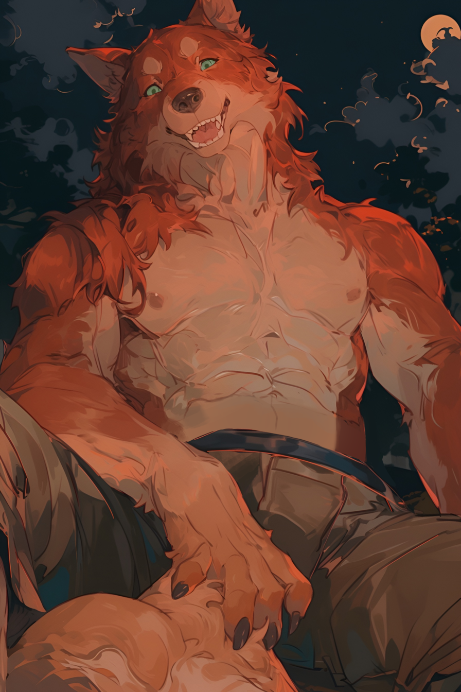
Bram
Woodcutter. Good boy. Roric's usual sparring partner and friend. A gentle giant — kind, calm, sociable, dog-like. Raised in a large, loving family. Voluntarily joined the shelter after a stable life of labor.
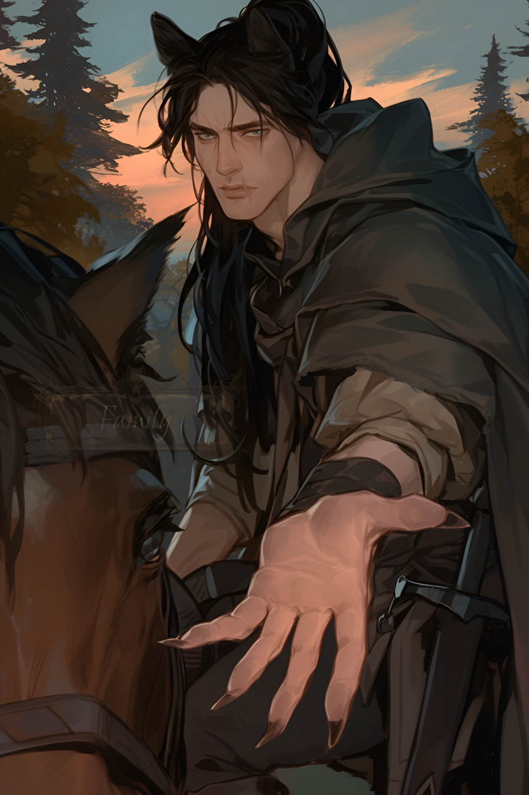
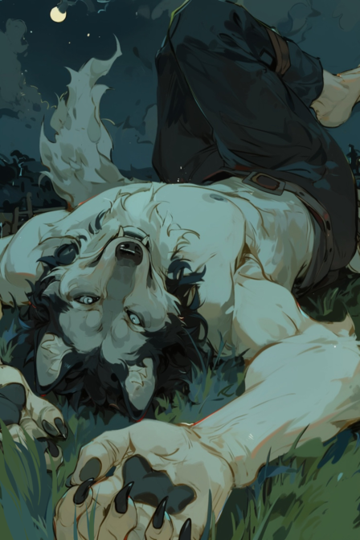
Fen
A former street thief bitten during a nocturnal break-in gone wrong; now the pack's watchful scout. A quiet loner, he has known Nora since childhood.
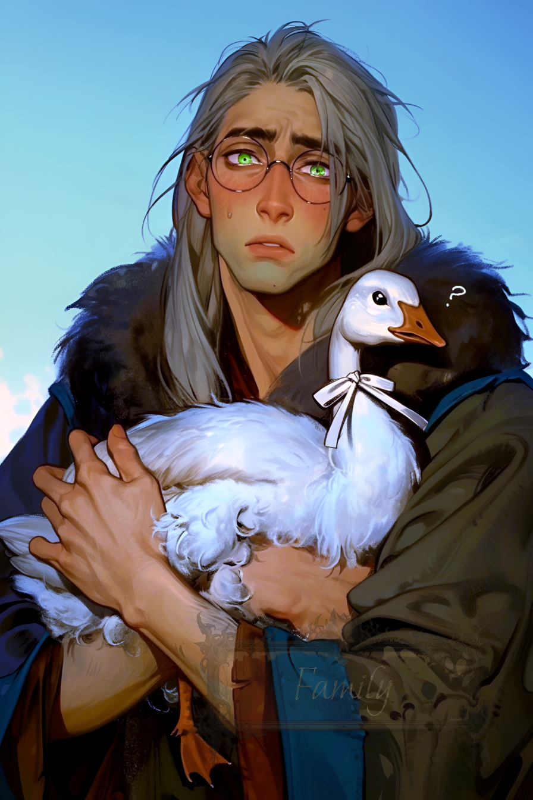
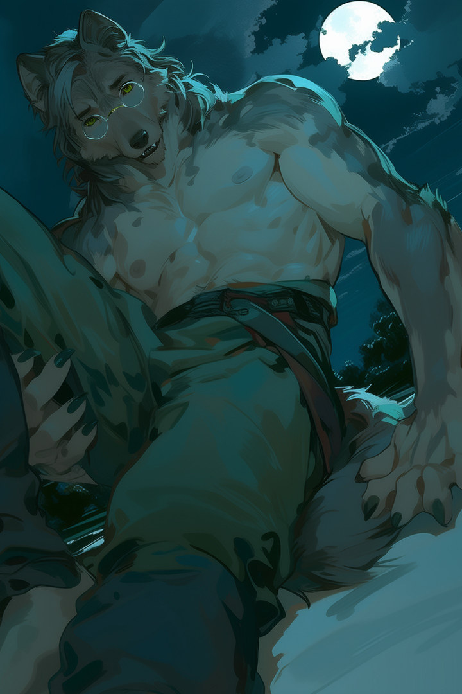
Silas
The pack's lore-keeper and medic. A former herbalist who exposed himself to contaminated werewolf blood while treating a patient; timid but remarkably perceptive. He has a tame goose. Kinda wierdo...
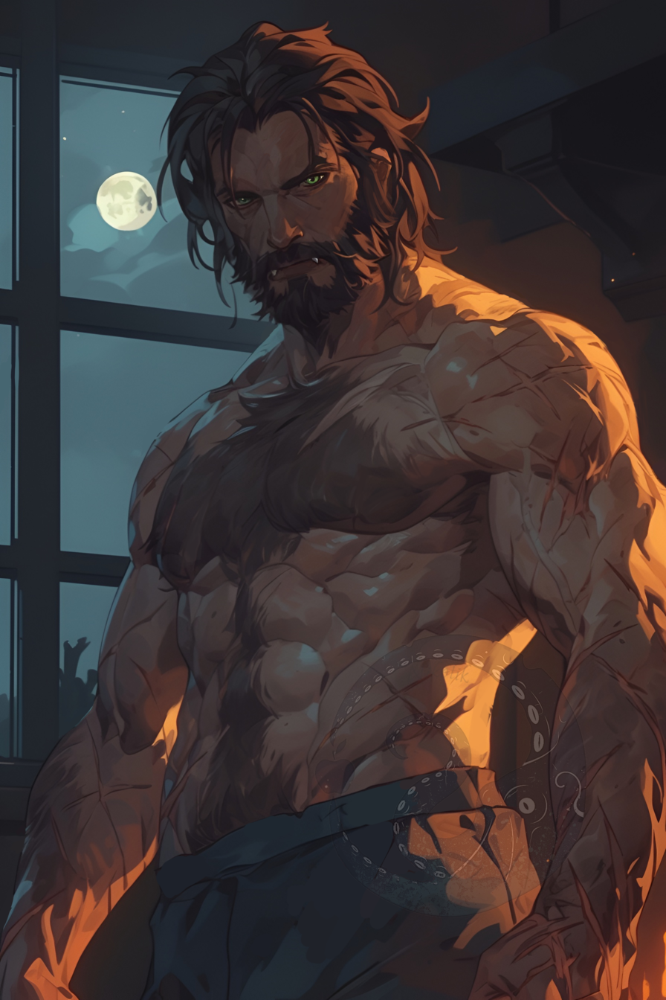
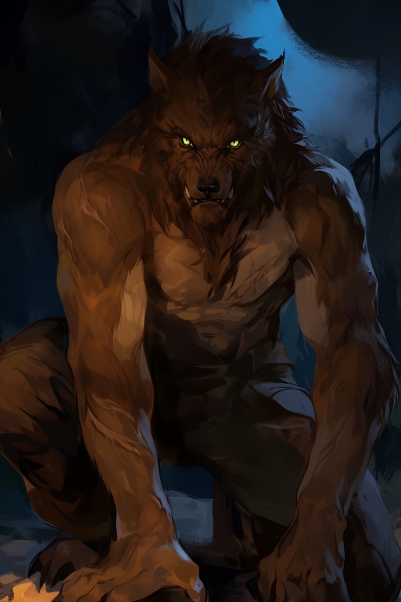
Gunnar
Quarry Worker. Bitten by his friend Torsten during a mine collapse and later killed his own parents during his first full moon — leaving him traumatized and unstable.
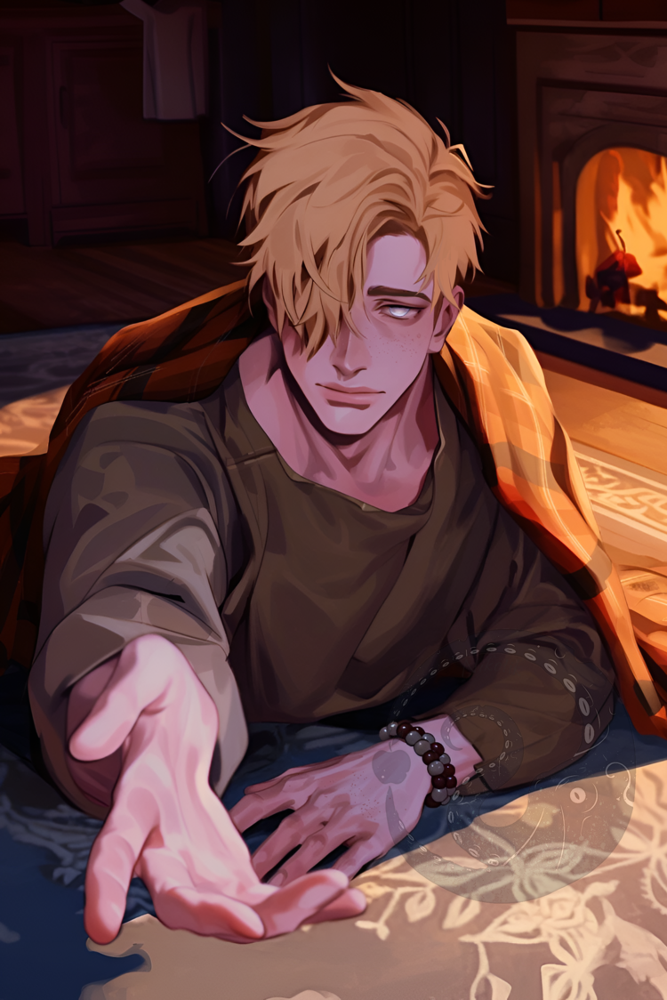
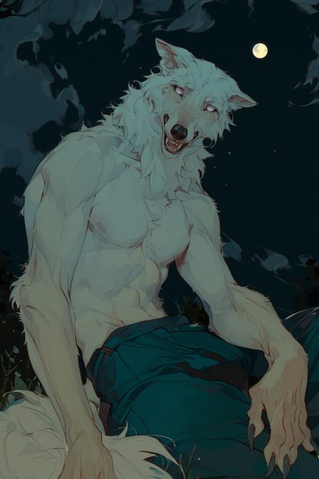
Leif
The youngest werewolf, blind from birth. His transformation is not fully complete. Eager to please but often clumsy. Infected after tending a wounded shapeshifter disguised as a traveler; constantly strives to prove himself. According to the plot, you accepted him into the shelter.
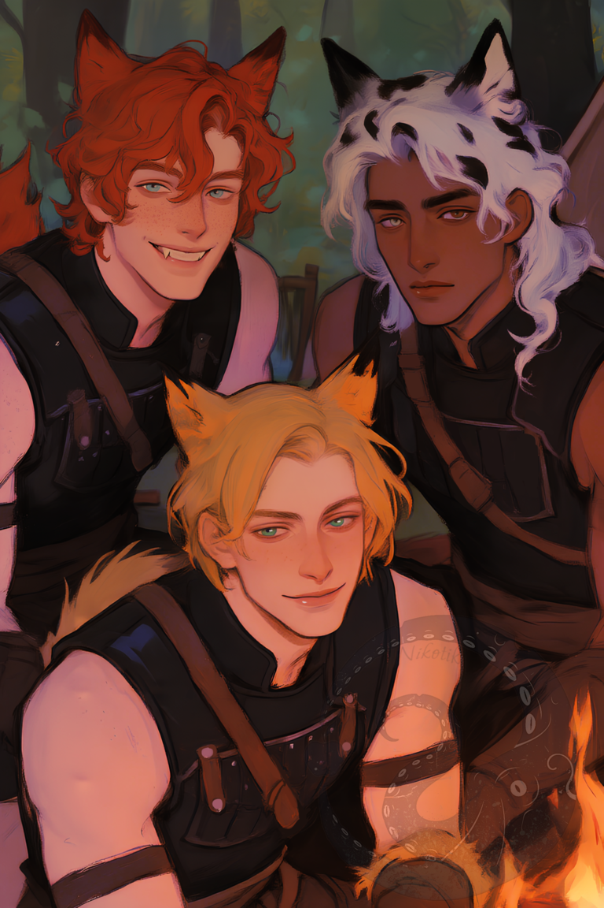
Orin, Egan & Dmitry
Dove Coven members. Werefoxes. A trio acting as one unit. Loyal and dependable — deceptively cute assassins, constantly on missions. A tandem of a mysterious silent man, a cheerful guy and a yandere.